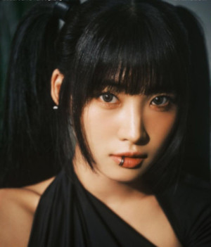
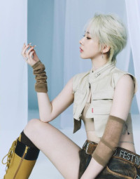

Oi, meu nome é E:U! (Park Ji-won) nasci em Hanam, Gyeonggi - Coreia do
Sul em 19 de maio de 1998 (25 anos).
Minhas posições no grupo são: Rapper Principal, Dançarina
Principal e Sub Vocalista.
Tenho 1.61 mts de altura.
Meu
signo Chinês é Tigre, e do Zodíaco, Touro.
Meu MBTI é ISFJ.

Olá, sou Sihyeon! (Kim Si-hyeon) nasci em Seongnam - Coreia do Sul em
5 de agosto de 1999 (24 anos).
Minhas posições são: Líder, Vocalista Líder, Visual e Face.
Tenho 1.68 mts de altura.
Meu signo Chinês é Coelho, e do
Zodíaca, Leão.
Meu MBTI é ENTP.
Oi pessoal, sou a Mia! (Han Eun-ji) nasci em Gyeongsang - Coreia do
Sul em 13 de janeiro de 2000 (23 anos).
Minhas posições no grupo são: Vocalista Principal, Dançarina
Principal e Sub Rapper.
Tenho 1.63 mts de altura. Meu signo
Chinês é Coelho, e do Zodíaco, Capricornio.
Meu MBTI é ISTP.

Oi, aqui é a Onda! (Jo Se-rim) nasci em Bucheon, Gyeonggi - Coreia do
Sul em 18 de maio de 2000 (23 anos).
Minhas posições: Dançarina Líder, Visual e Sub Vocalista.
Tenho 1.65 mts de altura.
Meu signo Chinês é Dragão, e do
Zodíaco, Touro.
Meu MBTI é ISFJ.

Como estão? sou Aisha (Heo Yoo-rim) nasci em Suwon, Gyeonggi - Coreia
do Sul em 21 de julho de 2000 (23 anos).
Assumo as posições de: Rapper Líder Sub Vocalista e Dançarina.
Tenho 1.74 mts de altura.
Meu signo Chinês é Dragão, e do
Zodíaco, Cancer.
Meu MBTI é ESTP.
Oi, meu nome é Yiren (Wang Yi-ren) nasci em Chequião, Hancheu - China
em 29 de dezembro de 2000 (22 anos).
Tenho as posições no grupo de: Dançarina Líder, Sub Vocalista,
Sub Rapper, Visual, Center e
Maknae.
Tenho 1.63 mts de altura.
Meu signo Chinês é Dragão, e do Zodíaco, Capricornio.
Meu
MBTI é ESFP.